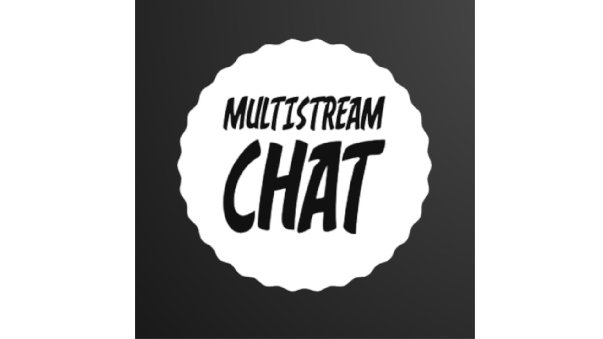
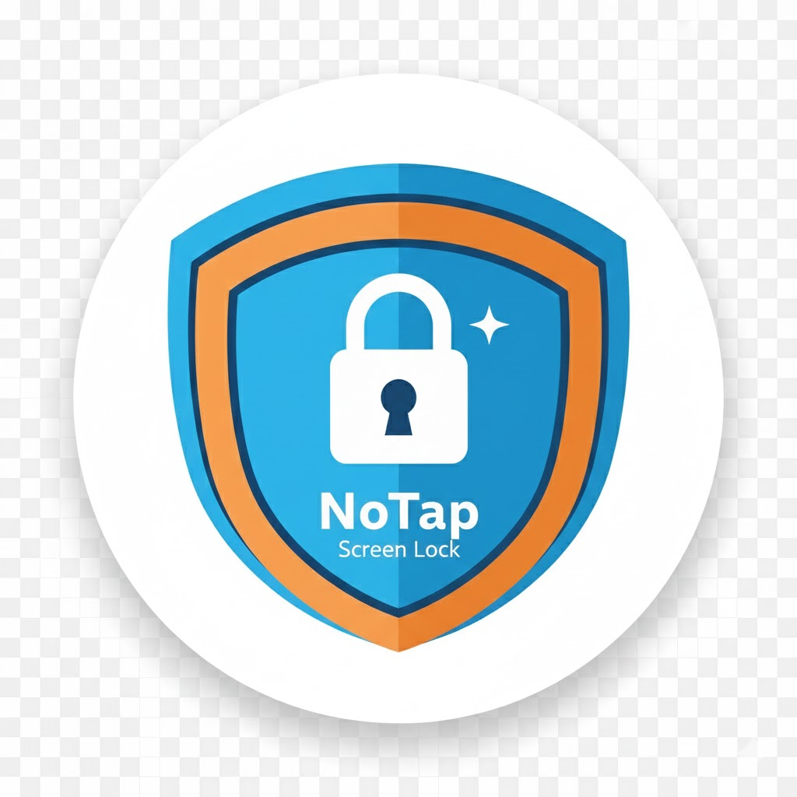

Nossos Aplicativos

Restream Chat
O seu multi-chat essencial para transmissões ao vivo. Monitore mensagens do YouTube, Twitch e mais, tudo em uma única janela otimizada. Desenvolvido para máxima produtividade do streamer.
Baixar Restream Chat

NoTap Screen Blocker
Ferramenta de acessibilidade para bloqueio de toque acidental, Volume e Botões de Hardware. Ideal para estabilizar o ecrã para usuários com desafios de controlo motor fino ou para evitar interrupções de crianças.
Baixar NoTap Screen Blocker